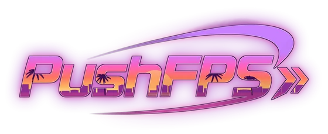
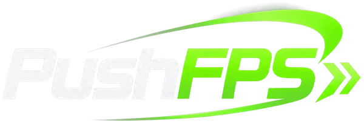
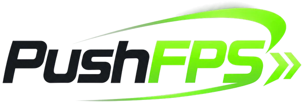
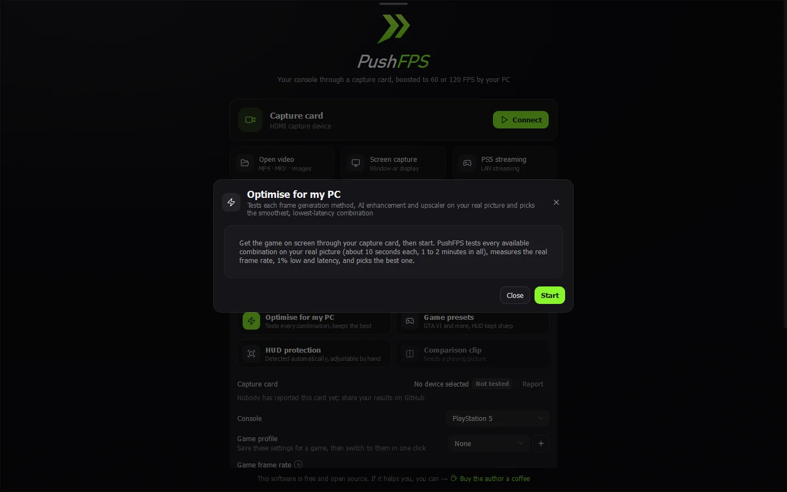

Veyra by Likely7
PushFPS is a modified version of Veyra. Nearly all of the engine, the capture support, the streaming sources and the frame generation integration are Likely7's work.



PushFPS reads the picture from your capture card and adds generated frames in real time on your PC. Nothing changes on the console or in the game. Free and open source, for Windows 11.
Latest release on GitHub. Works with NVIDIA, AMD and Intel graphics.
A 30 FPS game repeats every picture twice inside the console's 60 Hz signal. PushFPS keeps the real pictures and fills the gaps with new frames on your graphics card.
PS5, Xbox Series or Switch 2, set to 60 Hz output.
Any card Windows sees as a camera, USB or PCIe.
Finds the real frames, then generates the ones in between on your GPU.
Play at the frame rate you picked. Optionally stream it with OBS.
Generated frames make motion look smoother. They don't make the game react faster: your inputs still land at the game's own pace, plus the capture card's delay and up to one game frame (about 33 ms at 30 FPS). PushFPS measures its own part and can show it on screen. For competitive games, play on the console's own display path.
Veyra is a powerful video enhancer. PushFPS turns it into a console tool: three choices instead of hundreds, and tools that tune and protect the picture for you.

Screenshots of the real app, taken automatically on a build machine without a graphics card, so NVIDIA-only controls show as unavailable.
| Minimum | Recommended | |
|---|---|---|
| System | Windows 11 64-bit with DirectX 12 | Latest Windows updates |
| Graphics card | Any DirectX 12 card for 2× with AMD FSR; NVIDIA RTX 30 for NVIDIA's methods | NVIDIA RTX 40 or 50 series |
| Capture card | Shows up as a camera in Windows, 1080p at 60 FPS without compression, or stream instead | 4K60 capture with HDMI passthrough |
| Connection | USB 3 port directly on the PC | USB 3.2 Gen 2 or a PCIe card |
| Console | Any console with HDMI out | 60 Hz output, or 120 Hz if your capture card takes it |
| Method | Graphics cards | Up to |
|---|---|---|
| NVIDIA Video Frame Generation | RTX 40, RTX 50 (RTX 30 experimental) | 8× |
| NVIDIA Frame Generation for games | RTX 40 (2×), RTX 50 | 6× |
| ANR by Apex Compute experimental | GTX 16 and newer, Radeon RX 5000 and newer, Intel Arc (Apex's list) | 6× |
| Intel XeSS Frame Generation experimental | DirectX 12 cards | 4× |
| AMD FSR Frame Generation | DirectX 12 cards (FSR 4 ML on a Radeon RX 9000, FSR 3.1 otherwise) | 2× |
| AMD FRC video interpolation | AMD graphics with a current AMD driver | 2× |
Free, no account, no ads, no telemetry. The installer needs no administrator rights.
Get PushFPS-…-win64.zip from the latest release and extract it anywhere.
Double-click Install-PushFPS.cmd. It downloads Veyra's runtime package from Veyra's own GitHub release, checks it, and installs PushFPS to your user folder with Start menu and desktop shortcuts.
Console HDMI into the capture card, the card into your PC. Set the console to 60 Hz. On PlayStation, turn off Enable HDCP in Settings, System, HDMI, or the picture stays black.
Open PushFPS, click Connect on the capture card and fill in the quick setup, or let Optimise for my PC do it. Press F11 for fullscreen.
Windows warns about an unknown publisher? PushFPS isn't code signed yet. If you downloaded it from the PushFPS GitHub releases, choose More info, then Run anyway. To update, run the newer installer; your settings are kept. To uninstall, run Install-PushFPS.cmd -Uninstall.
Yes. It's free and open source under the GPL-3.0, like Veyra. There are no accounts, ads or paid tiers.
No. PushFPS only processes the video coming out of the capture card. Nothing is installed on the console and the game isn't touched.
A little. To place a frame between two real frames, PushFPS waits for the second one: up to one game frame, about 33 ms at 30 FPS, on top of your capture card's own delay. Motion looks smoother, but the game doesn't react faster. Turn on Show latency on screen to see PushFPS's part measured, and use Measure total delay for the whole chain. If your capture card takes 120 Hz, a 120 Hz console output gets each frame to the PC about 8 ms sooner.
No. AMD FSR frame generation runs on any DirectX 12 card, and ANR by Apex Compute supports GTX 16 and newer, Radeon RX 5000 and newer and Intel Arc. AMD cards also get AMD FRC through the AMD driver. NVIDIA RTX 40 and 50 cards get the most options, including up to 8× frame generation and AI picture enhancement.
Any card that Windows shows as a camera and that sends 1080p at 60 FPS without compression. The Elgato 4K X, HD60 X and 4K S are tested. The app shows each card's status and has a report form for untested cards.
Yes. PS5 streaming (Remote Play over your home network), PC streaming from a Sunshine host and Xbox streaming are built in. A capture card still gives the sharpest picture and the lowest delay.
Yes. Set the game frame rate to 60 and pick 120 FPS or Match monitor.
Yes. PushFPS records and keeps an instant replay itself, and the OBS Studio plugin adds the boosted picture to your OBS scenes for streaming.
Not yet. The engine is built on DirectX 12 and Windows-only GPU components, so another platform needs a new engine. It's on the roadmap as a separate project.
No. There's no telemetry or analytics. It only goes online for the update check on GitHub, when you share a clip to your own Discord webhook, and when you start a stream. See the privacy policy.
In the app, Settings, Report a problem copies diagnostic information and opens GitHub Issues. Read it before pasting.
PushFPS is a modified version of Veyra. Nearly all of the engine, the capture support, the streaming sources and the frame generation integration are Likely7's work.
ANR frame generation is Apex Neural Rendering from Apex Compute. PushFPS contains Veyra's ANR host code and no ANR files; you download ANR from Apex. PushFPS isn't affiliated with Apex Compute.
License. PushFPS is free software under the GNU GPL-3.0. PS5 streaming uses chiaki-ng (AGPL-3.0 with an OpenSSL exception), PC streaming uses moonlight-common-c (GPL-3.0), and Xbox streaming uses libdatachannel (MPL-2.0); each release attaches the exact source of these libraries. Modification notice and third-party notices: NOTICE.md, THIRD_PARTY_NOTICES.md.
PushFPS incorporates the NVIDIA DLSS SDK and NGX SDK under the NVIDIA RTX SDKs License. NVIDIA, NVIDIA RTX and DLSS are trademarks of NVIDIA Corporation. PushFPS isn't sponsored or endorsed by NVIDIA, AMD, Intel, Sony, Microsoft, Nintendo or any game publisher. PlayStation, Xbox and Nintendo Switch are trademarks of their owners. This website uses the Barlow typeface (SIL Open Font License).